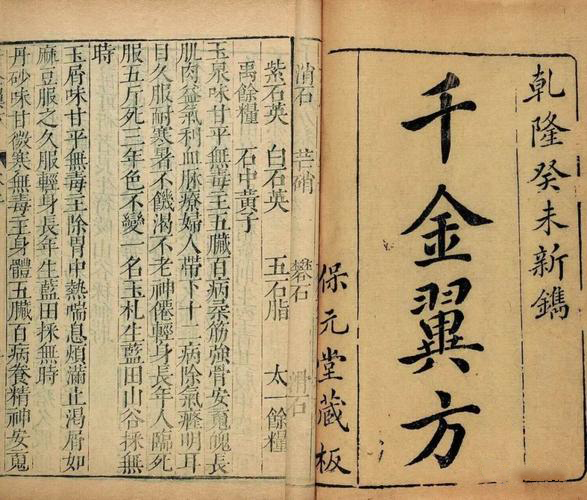
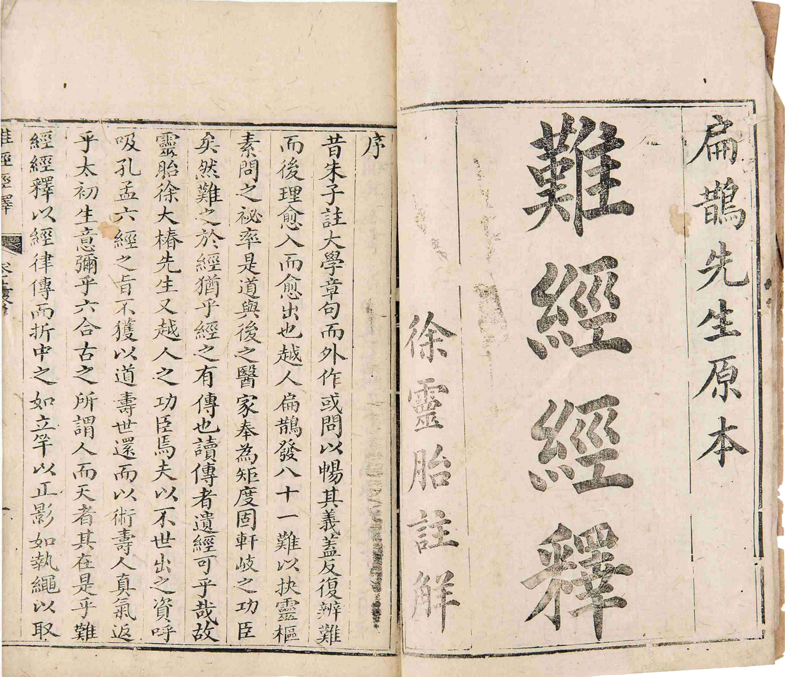
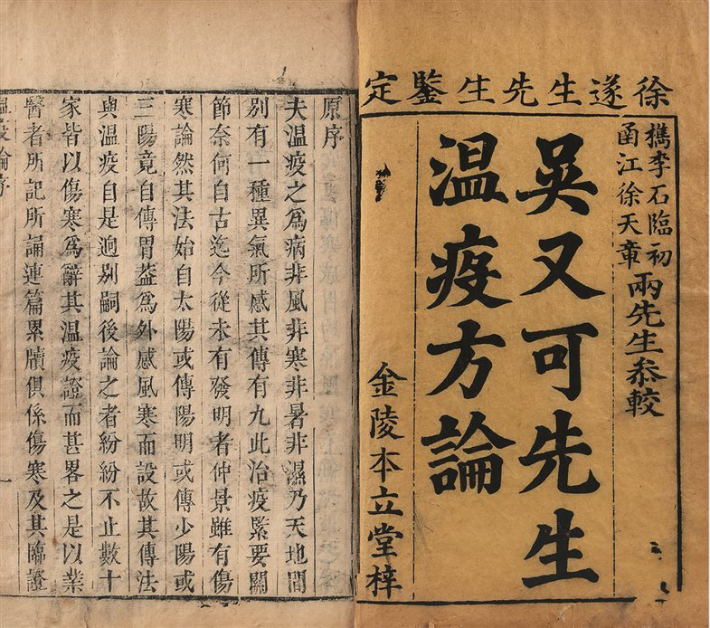
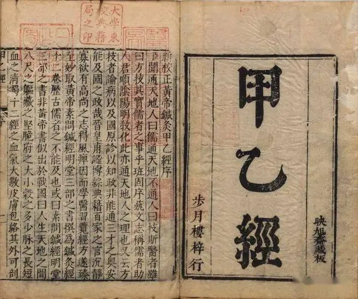
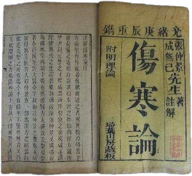

本书是中国传统医疗与保健系列丛书之一，是《千金方》的白话精选本。《千金方》是人称“药王”的唐代孙思邈所作的综合性临床医著，书中所载医论、医方较系统地总结了唐代以前的医学成就，是一部科学价值较高的著作。
卷1是医学总论及本草、制药等；卷2～4妇科病；卷5儿科病；卷6七窍病；卷7～10诸风、脚气、伤寒；卷11 ～20系按脏腑顺序排列的一些内科杂病；卷21消渴、淋闭等症
；卷22疔肿痈疽；卷23痔漏；卷24解毒并杂治；卷25备急诸术；卷26～27食治并养性；卷28平脉；卷29～30针灸孔穴主治。总计233门，合方论5300首。书中所载医论、医方较系统地总结了自《内经》以后至唐初的医学成就，是一部科学价值较高的著作。1949年后有影印本。
[3]
该书第一卷为总论，内容包括医德、本草、制药等；再后则以临床各科辨证施治为主，计妇科2卷，儿科1卷，五官科1卷，内科15卷（其中10卷按脏腑分述），外科3卷；另有解毒急救2卷，食治养生2卷，脉学1卷及针灸2卷。共计233门，方论5300首。
《千金要方》又称《备急千金要方》、《千金方》，是中国古代中医学经典著作之一，共30卷，是综合性临床医著，被誉为中国最早的临床百科全书。唐朝孙思邈所著，约成书于永徽三年（652年）。该书集唐代以前诊治经验之大成，对后世医家影响极大。
《千金要方》总结了唐代以前医学成就，书中首篇所列的《大医精诚》、《大医习业》，是中医学伦理学的基础；其妇、儿科专卷的论述，奠定了宋代妇、儿科独立的基础；其治内科病提倡以"五脏六腑为纲，寒热虚实为目"，并开创了脏腑分类方剂的先河；其中将飞尸鬼疰（类似肺结核病）归入肺脏证治，提出霍乱因饮食而起，以及对附骨疽（骨关节结核）好发部位的描述、消渴（糖尿病）与痈疽关系的记载，均显示了相当高的认识水平；针灸孔穴主治的论述，为针灸治疗提供了准绳，阿是穴的选用、“同身寸”的提倡，对针灸取穴的准确性颇有帮助。因此，《千金要方》素为后世医学家所重视。《千金要方》还流传至国外，产生了一定影响。

《难经》原名《黄帝八十一难经》，又称《八十一难》，是中医现存较早的经典著作。关于《难经》的作者与成书年代历来有不同的看法，一般认为其成书不晚于东汉，内容可能与秦越人（扁鹊）有一定关系。《难经》之“难”字，有“问难”或“疑难”之义。全书共八十一难，采用问答方式，探讨和论述了中医的一些理论问题，内容包括脉诊、经络、脏腑、阴阳、病因、病机、营卫、腧穴、针刺、病证等方面。

全书首列总目、凡例、附图。卷一卷二为序例，主要介绍历代诸家本草及中药基本理论等内容。首先列举《神农本草经》、《名医别录》、《雷公炮炙论》、《唐本草》等四十一种本草著作，并加简要评介，基本反映出明代以前本草学发展概况；另又附列引用医书二百七十七种，经史百家书籍四百四十种，共计七百十七种。通过引述前人专论如神农本经名例、陶隐居名医别录合药方剂法则、采药分六气岁物、七方十剂、五味宜忌、五味偏胜、标本阴阳、升降浮沉、脏腑虚实标本用药式、引经报使、相须相使相畏相恶诸药、相反诸药、服药食忌、妊娠禁忌、饮食禁忌、李东垣随证用药凡例、张子和汗吐下之法、陈藏器诸虚用药凡例等，使中药理论获得系统整理。卷三卷四为百病主治，大致沿袭宋以前本草“诸病通用药”旧例，以诸风等一百十三种病证为纲，分列主治药物，或于病证下再分若干证，类列药物用法，复设草部、菜部、果木等为小纲，并详其主治，编次有序，便于临证参考。卷五至卷五十二为药物各论，总目原称载药一千八百九十二种，经实核为一千八百九十七种。各论均以“部”为纲，以“类”为目分类，分为水、火、土、金石、草、谷、菜、果、木、服器、虫、鳞、介、禽、兽、人等十六部，每部之前均有简要论述。各部之下再分若干类，如草部分为山草、芳草、隰草、毒草、蔓草、水草、石草、苔类、杂草等十一类，凡六十类。每药均标注首载文献出处，若有归类变更或并入某药者，则以校正说明；下设释名、集解、辨题或正误、修治、气味、主治、发明、附方等栏目解说。“释名”下列举别名，并释命名意义；“集解”介绍产地、品种、形态、采收等；“辨疑正误”对历代本草有疑误者予以辨正；“修治”阐述炮制方法；“气味”阐述药物性味及有毒无毒；“主治”包括功效；“发明”侧重阐述药性理论、用药要点及李氏学术见解；“附方”广录以该药为主的主治各科病证的有效方剂。
本书在唐慎微《经史证类备急本草》基础上，进行大量整理、补充，并载述李氏发明与学术见解。其主要成就包括:集我国16世纪前中药学之大成，该书首先介绍历代本草的中药理论和所载药物，又首次载入民间和外用药三百七十四种，如三七、半边莲、醉鱼草、大风子等，并附方一万一千零九十六则。显示当时最先进的药物分类法，除列“一十六部为纲，六十类为目”外，还包括每药之中“标名为纲，列事为目”，即每一药物下列释名、集解等项，如“标龙为纲，而齿、角、骨、脑、胎、涎皆列为目”；又有以一物为纲，而不同部位为目。特别是在分类方面，从无机到有机，从低等到高等，基本符合进化论观点。全面阐述所载药物知识，对各种药物设立若干专项，分别介绍药物名称、历史、形态、鉴别、采集、加工，以及药性、功效、主治、组方应用等；同时引述自《本经》迄元明时期各家学说，内容丰富而有系统。
对中医药理论有所发明，书中强调对中药应该辨证应用，如藜芦条下称“吐药不一，常山吐疟痰，瓜丁吐热痰，乌附尖吐湿痰，莱菔子吐气痰，藜芦则吐风痰者也”。其中亦有前人所未论及之名言和精辟理论，如辛夷条下有“脑为元神之府”之论，橘皮条下称“脾乃元气之母，肺乃摄气之龠”等。书中对过去本草书籍中将两药误为一物者，如葳蕤与女萎；一物而误为两药者，如天南星与虎掌；品种混淆不清者，如百合与卷丹；药用部位失真者，如五倍子误认为果实；药物归类不当者，如将薯蓣列为草类等，均予以澄清更正。书中对妄图长生不老，服食丹石成风现象进行了批判，对黄连、泽泻服之可以成仙，草子可以变鱼等说，亦作了驳斥。
本书虽为中药学专书，但涉及范围广泛，对植物学、动物学、矿物学、物理学、化学、农学等内容亦有很多记载。如在矿物学方面对石油的产地、性状作了详细记述；在化学方面，阐述了检验石胆真伪的方法；在物理学方面，从空气中的湿度变化，以推测雨量的大小；在农学方面，阐述采用嫁接技术，以改良果树品种的方法等。本书通过对药名的探索与考证，阐明某些汉字的字形、读音；也载述一些少数民族和其他国家药名的读音和含义。还记载契丹族用羊皮、羊骨占卜和写字，吐番人用燕脂化妆等习俗，蒙古族裹于牛皮内治疗外伤方法等。本书保存了16世纪以前大量文献资料，其中有的原书已佚失，有关资料可从本书得以窥见。

据《吴江县志》记载，在《温疫论》成书的1642年前后，吴县连年发生疫病流行，一巷百余家，无一家幸免；一门数十口，无一口幸存。吴又可在《温疫论》原序中说“崇祯辛巳，疫气流行，感者多，于五六月益甚，或合门传染。其于始发之时，每见时师误以正伤寒法治之，未有不殆者……医者彷徨无措，病者日近危笃。病愈急，投医愈乱。不死于病，乃死于医；不死于医，乃死于古册之遗忘也。”他在这样的环境中，深感当时医学的不足，发出“守古法则不合今病，舍今病而别搜古书，斯投剂不效……千载以来，何生民之不幸如此”的感叹，因此在临床实践中“静心穷理，格其所感之气、所入之门、所抵之处，与夫传变之体”，著成《温疫论》，提出必须从病因到治疗对温病与伤寒作明确区分。

《针灸甲乙经》，又称《黄帝甲乙经》《黄帝三部针经》《黄帝针灸甲乙经》。西晋·皇甫谧撰，12卷，128篇，成书于公元282年。前六卷论述基础理论，后六卷记录各种疾病的临床治疗，包括病因、病机、症状、诊断、取穴、治法和预后等。采用分部和按经分类法，厘定了腧穴，详述了各部穴位的适应证和禁忌、针刺深度与灸的壮数，是我国现存最早的一部理论联系实际的针灸学专著。

《伤寒杂病论》 [1]
是中国传统医学著作之一，是一部论述外感病与内科杂病为主要内容的医学典籍，作者是东汉末年张仲景，是中国中医院校开设的主要基础课程之一。《伤寒杂病论》系统地分析了伤寒的原因、症状、发展阶段和处理方法，创造性地确立了对伤寒病的“六经分类”的辨证施治原则，奠定了理、法、方、药的理论基础。
公元3世纪初，张仲景博览群书，广采众方，凝聚毕生心血，写就《伤寒杂病论》一书。中医所说的伤寒实际上是一切外感病的总称，它包括瘟疫这种传染病。该书成书约在公元200年～210年左右。原书失散后，经王叔和等人收集整理校勘，分编为《伤寒论》和《金匮要略》两部。《伤寒论》共10卷，专门论述伤寒类急性传染病。